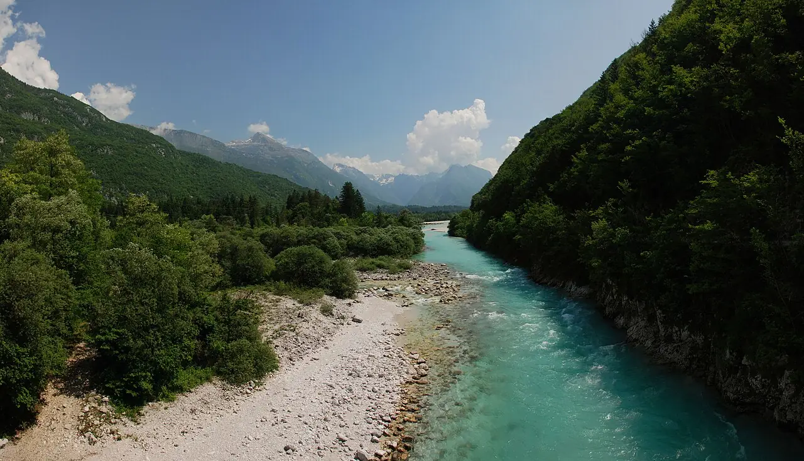

Soča — Bovec
Alpes juliennes, Slovénie · kayak

Rivière alpine d’un vert émeraude qui dévale la vallée de Bovec, au cœur du parc national du Triglav. Ses rapides font de la région une référence européenne du kayak d’eau vive et du rafting.
- Lieu
- Alpes juliennes, Slovénie
- Niveau
- Variable selon les conditions
- Activités
- kayak
- Type d'eau
- inland
- Coordonnées
- 46.32, 13.55 (position approximative du secteur)
Dangers à connaître
- Eau glaciale : combinaison néoprène indispensable.
- Rapides, rochers et siphons ; niveaux qui montent vite après la pluie.
Le conseil d'Ocean Buddy
Choisis ton tronçon avec un guide local : les parcours vont du facile au très technique selon la section et le niveau d’eau.
Ouvrir dans Ocean Buddy Télécharger sur l'App Store
Source : Fiche Ocean Buddy · septembre 2026 · à vérifier localement.